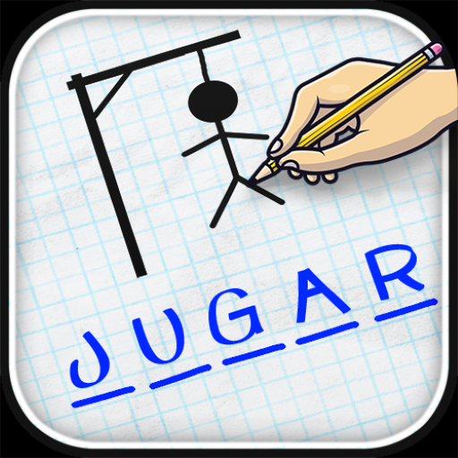
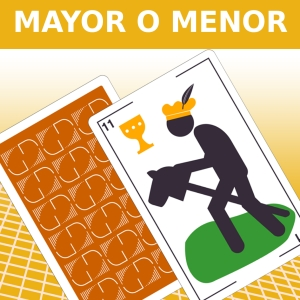

Ahorcado
Mayor o Menor
Descripcion:
El juego consiste en adivinar si la proxima carta es menor o mayor. Con 5 aciertos consigue la victoria!.
JUGARPreguntados

Descripcion:
Adivina el país de la bandera mostrada, si en 10 turnos aciertas 5 o mas veces para obtener la victoria.
JUGARJuego propio

Descripcion:
El juego de la viborita, también conocido como Snake, para ganar se debe obter 50 puntos, cada vez que se come un alimento se obtendran 10. El juego consiste en controlar una serpiente en la pantalla y hacerla crecer tanto como sea posible al comerse los alimentos disponibles, sin chocar contra las paredes o contra su propio cuerpo.
JUGAR